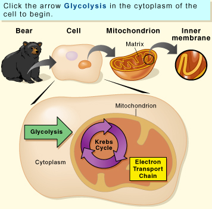

OBJECTIVE: to compare the output of the three stages of respiration
Come play the respiration pinball game! See how the three stages of respiration—glycolysis, the Krebs cycle, and the electron transport chain—generate ATP.

When you are ready, go to page